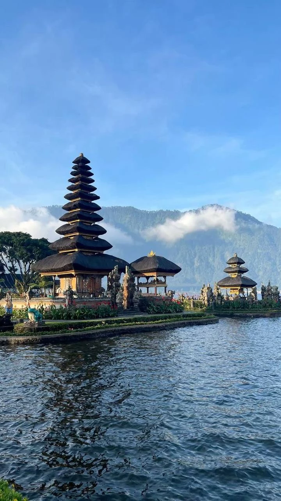

INDONESIA • WELLNESS • DIGITAL NOMADS
One of the world's most popular destinations for tourism, remote work, wellness, entrepreneurship and tropical island living.
Bali has evolved from a tourism destination into a global hub for digital nomads, entrepreneurs, creators and remote professionals. The island attracts millions of visitors each year seeking culture, lifestyle, business opportunities and natural beauty.
Its combination of affordable living, strong international community and tropical environment has made Bali one of the world's most recognized lifestyle destinations.
Remote work hubs and coworking spaces.
Beaches, temples and cultural attractions.
Housing, transport and daily expenses.
Online businesses and international startups.
Retreats, yoga, fitness and healthy living.
Villas, rentals and investment opportunities.
Areas such as Canggu, Ubud and Seminyak have become internationally known for coworking spaces, startup communities and remote work lifestyles.
Entrepreneurs, freelancers, developers, marketers and creators from around the world choose Bali as a base for work and networking.
Major sectors include tourism, hospitality, wellness, food and beverage, real estate, digital services, online businesses, creative industries and event management.
The island's economy continues expanding through international tourism and growing remote-work communities.
Popular destinations include Ubud, Canggu, Seminyak, Uluwatu, Tanah Lot Temple, Tegallalang Rice Terraces, Mount Batur and Nusa Penida.
Bali offers a unique mix of beaches, culture, spirituality, nature and modern lifestyle amenities.
Bali continues attracting global talent, investors and entrepreneurs. Growth in remote work, wellness tourism, technology services and hospitality is creating new opportunities across the island.
Its reputation as a global lifestyle destination ensures continued international attention and development.